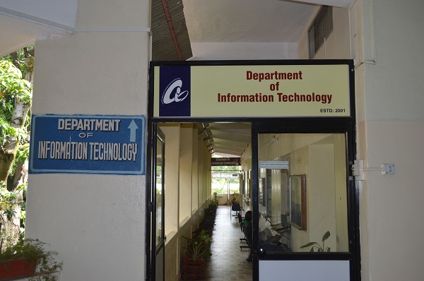

The Department of Information Technology got established in 2001 and is one of the youngest departments of WCE, Sangli. The department focuses on recent development in the area of Information Technology such as Internet Technology, Web Technology Mobile Technology, Theoretical Computer Science, Database Engineering, Software Engineering, Operating Systems. Syllabus of these courses is up-to-date and is in-line with the current trends of the Computer and IT Industry. Additional guidance is offered to students in specific areas in the field of Information Technology and Computer Science to enable the outgoing graduates to give more justice to the job assigned to them. The Department provides best laboratories/facilities and hands-on training to the Undergraduate students both in the conventional subject as also in the emerging fields of specialization.
